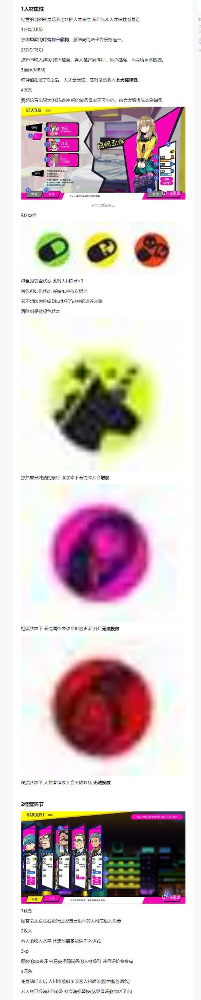

人材属性与经营环节
据点经营的目标是养出属性好的人材。这一页说明人材属性、状态药丸与 经营（春销）界面的读法；词条的具体数值见 人才词条一览。
人材属性
| 属性 | 作用 |
|---|---|
| 容貌 LKS | 用来争取顾客。顾客会挑人材，容貌高的孩子更容易被选中 |
| 技巧 TEC | 与收入挂钩：技巧越高，客人越容易满足、评分越高，挣到的钱越多 |
| 精神 MEN | 即耐久。降到 D 之后人材会崩坏，崩坏时收入会大幅降低 |
| 词条 | 每名人材最多 3 个。它能反过来把属性拉上去，是养成的核心，见 人才词条一览 |
原文把这一节的作用说得很直白：经营的目的就是培养出优秀的人材属性。
状态（药丸）
人材列表里那颗药丸的颜色就是状态，共三档：
| 状态 | 含义 |
|---|---|
| 绿色 | 安全状态。此时人材 Def > 3 |
| 黄色 | 危险状态 |
| 红色 | 濒临状态。春销收入会大幅降低，而且无法挽救 |
原文把黄色与红色两档并成一句说明，大意是继续接客会让数值逐级变化； 但那一句字迹不清，只能确认大意，本站不逐字转写。
这一节的结论只有一句：若不想因为「坏掉」这个负面效果断了战神的养成之路， 就要时刻保持绿色状态。
另有两条与状态有关的说明，同样只能确认大意、无法逐字转写：
- 一条与纯洁有关：说的是纯洁是某种状态的象征，该状态下春销收入会增加。
- 一条说的是某种状态下，春销过程中会出现某种变化，并且无法挽救。
以上两句在截图里字迹不清，本站不做猜测性补全。原图见下方。
经营环节
经营（春销）界面游戏内标题为 HARUURI，上面有四处标注：
| 标注 | 含义 |
|---|---|
| 1 顾客 | 顾客会从左往右依次选择自己中意的人材，再进行消费 |
| 2 收入 | 客人的收入水平，代表他最多能给你多少钱 |
| 3 XP | 顾客的 XP 喜好。相同词条的人材更容易被这类顾客选中，并且评价会变高 |
| 4 词条 | 春销结束时，人材会获得该客人的词条（截图里标蓝的那一条）。若人材已经满 3 个词条，将会随机替换掉一个 |
第 4 条是刷词条玩法的机制基础：词条槽满之后，新拿到的词条是随机顶替的， 所以词条槽里放什么、什么时候接客，都会影响最终的成品。

内容出处
三节内容都来自小黑盒作者 轰击晨星 的攻略长图（署名
@dohnadohna来一起做坏事吧）。 原图是分次截图再拼起来的长图，小节编号不连续（「人材属性」之后直接跳到「状态」， 再往后才是「经营环节」），本站按内容重新归为三节。关于清晰度：原图宽仅 387 px，正文是 12 px 左右的字，且经过多次转存压缩， 部分句子已无法逐字辨认。本页只转写能确认的部分，上面那条列出的两句 就是因此没有收进来——与其猜一句写上去，不如标出来。请以原图为准。
词条数值不在本页，见 人才词条一览。